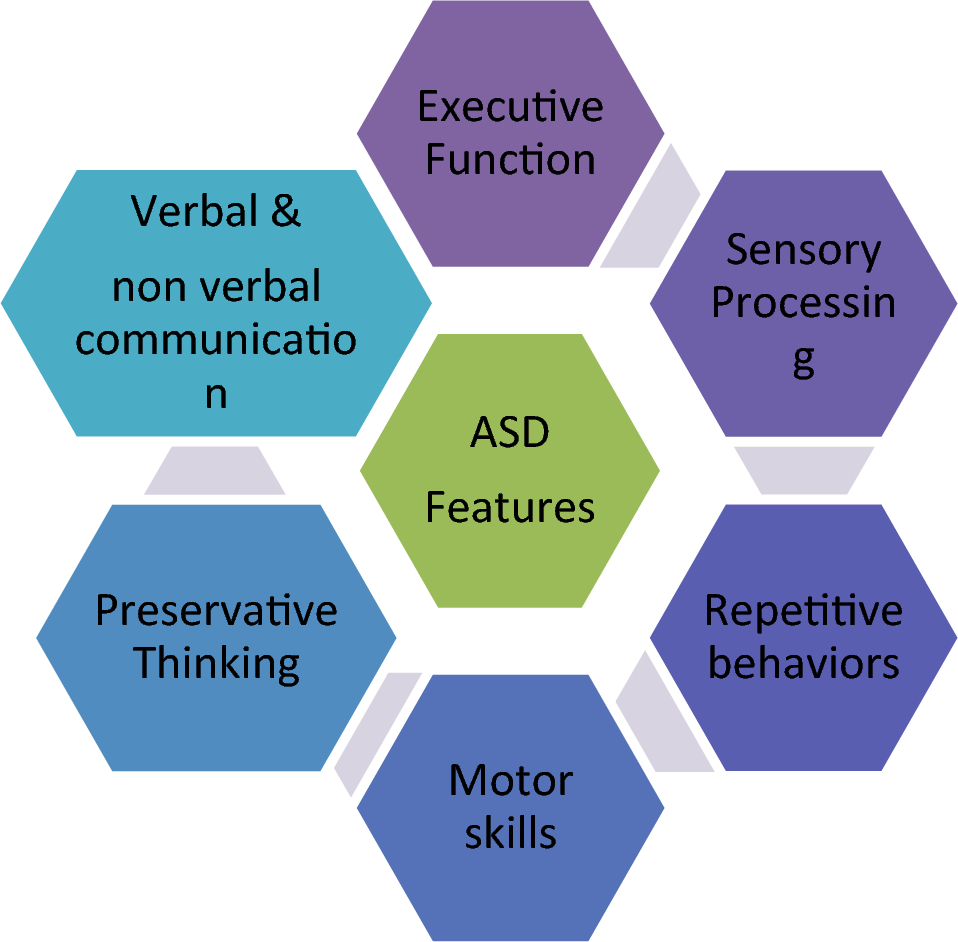
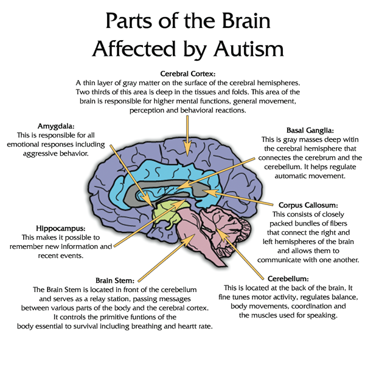
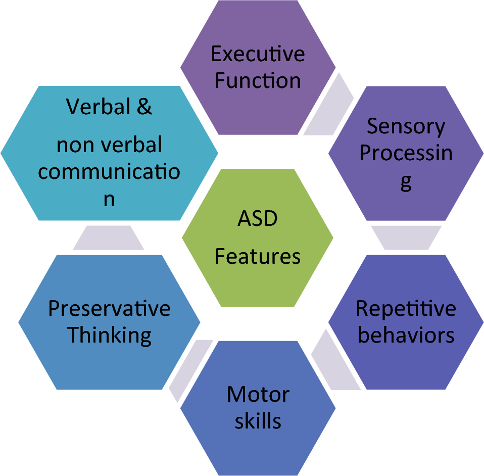
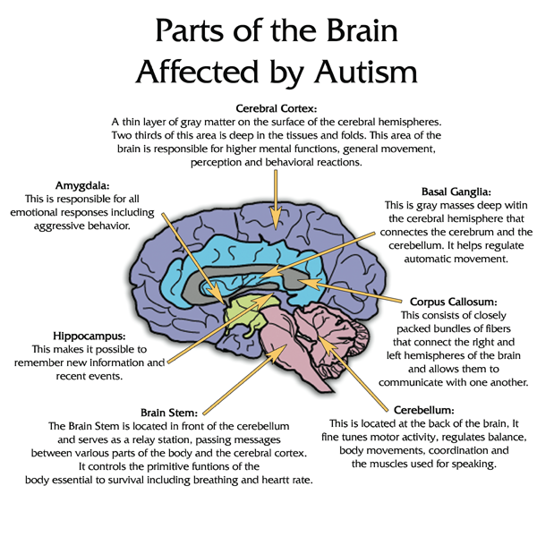

Welcome to Understanding Autism
Autism spectrum disorder (ASD) is a developmental disability that can cause social, communication, and behavioral challenges. With a wide range of presentations, it's important to learn more about ASD to better understand and support individuals on the spectrum.
Some common characteristics of ASD may include:
- Difficulty with social interaction and communication
- Repetitive behaviors or restricted interests
- Sensory sensitivities
Autism affects individuals of all ages. Here's a brief overview of autism in different age groups:
- Infants and Toddlers: May show signs such as delayed babbling, lack of pointing, and not responding to their name.
- Children: May have difficulty making friends, understanding social cues, and may engage in repetitive behaviors.
- Teens: May face challenges in social settings, have difficulty with transitions, and may experience increased sensory sensitivities.
- Adults: May struggle with employment, relationships, and independent living skills. They may also experience mental health issues such as anxiety and depression.
Research in autism spans various areas including genetics, neurobiology, behavioral interventions, and educational strategies. Understanding the latest research findings can help inform effective interventions and support for individuals with autism.
Early intervention and support can make a significant difference in the lives of individuals with ASD. If you suspect someone you know may be on the spectrum, resources and support are available.
Images Related to Autism
 


